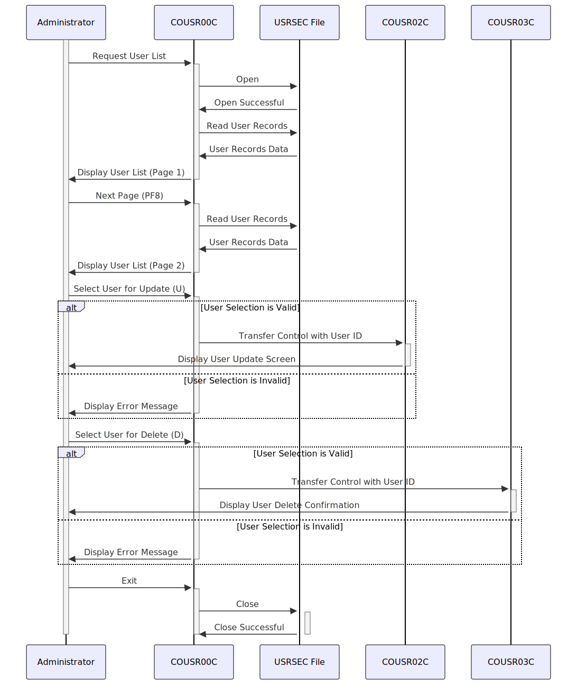

Gerado em: 1º de outubro de 2024
Aplicativo CardDemo - Especificação da Funcionalidade de Lista de Usuários
Descrição Resumida
A funcionalidade de Lista de Usuários no aplicativo CardDemo permite que os administradores visualizem e gerenciem contas de usuário. Ela fornece uma lista paginada de usuários, permitindo que os administradores naveguem pelos registros, selecionem usuários específicos e executem ações como atualizar ou excluir contas de usuário.
Histórias do Usuário
Como administrador, preciso visualizar uma lista de todos os usuários no sistema para gerenciar suas contas de forma eficaz.
Épico Relacionado
6 - Gerenciamento de Usuários e Segurança
Requisitos Funcionais
- O sistema deve permitir que os administradores visualizem uma lista de todos os usuários no sistema.
- A lista de usuários deve incluir as seguintes informações para cada usuário: ID do Usuário, Primeiro Nome, Sobrenome e Tipo de Usuário.
- O sistema deve exibir a lista de usuários em um formato paginado, com no máximo 10 usuários por página.
- O sistema deve permitir que os administradores naveguem pelas páginas da lista de usuários usando teclas de função (PF7 para a página anterior, PF8 para a próxima página).
- O sistema deve permitir que os administradores selecionem um usuário da lista para executar ações como atualizar ou excluir.
- O sistema deve validar as seleções do usuário para garantir que apenas opções válidas (U/D) sejam processadas.
- Com base na ação selecionada, o sistema deve redirecionar o administrador para o programa apropriado (COUSR02C para atualização, COUSR03C para exclusão) junto com o ID do usuário selecionado.
- O sistema deve lidar com o cenário em que nenhum usuário é encontrado no arquivo USRSEC.
- O sistema deve lidar com casos em que o usuário tenta navegar além da primeira ou última página da lista de usuários.
Requisitos Não Funcionais
- O sistema deve recuperar e exibir a lista de usuários com tempo de resposta mínimo (dentro de 2 segundos).
- O sistema deve ser acessível apenas por pessoal autorizado, garantindo a confidencialidade e segurança dos dados.
- A interface do usuário deve ser amigável e intuitiva para os administradores navegarem e realizarem ações.
- O sistema deve fornecer mensagens de erro claras em caso de entrada inválida ou erros do sistema.
Critérios de Aceitação
- A funcionalidade da lista de usuários deve estar acessível a administradores autenticados.
- A lista de usuários deve exibir com precisão as informações do usuário recuperadas do arquivo USRSEC.
- A funcionalidade de paginação deve funcionar corretamente, permitindo que os usuários naveguem por todos os registros de usuários.
- Os administradores devem ser capazes de selecionar um usuário e executar ações de atualização ou exclusão com sucesso.
- O sistema deve lidar com erros normalmente e exibir mensagens apropriadas para o usuário.
Melhorias de Código
- Implementar um algoritmo de classificação mais eficiente para exibir usuários, especialmente para conjuntos de dados grandes.
- Melhorar o tratamento de erros, fornecendo mensagens de erro mais específicas e registrando-as para fins de depuração.
- Adicionar comentários para melhorar a legibilidade e a manutenção do código.
- Considerar o uso de uma estrutura de dados para armazenar informações do usuário em vez de variáveis individuais para melhor organização.
- Usar uma convenção de nomenclatura consistente para variáveis e funções para aumentar a legibilidade do código.
Melhorias de Segurança
- Implementar validação de entrada para evitar vulnerabilidades de injeção de SQL.
- Criptografar informações confidenciais do usuário armazenadas no arquivo USRSEC para proteger contra acesso não autorizado.
- Implementar medidas de controle de acesso para restringir a funcionalidade da lista de usuários apenas ao pessoal autorizado.
- Auditar regularmente o sistema para identificar e solucionar possíveis vulnerabilidades de segurança.
Diagrama Conceitual:

–Made by “Smart Engineering” (by Compass.UOL)–